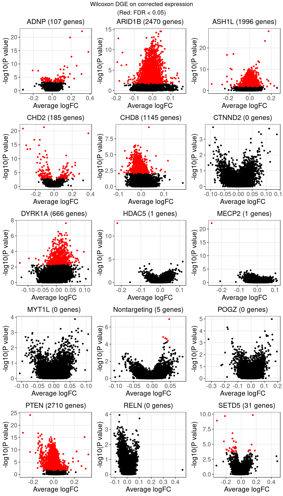

Estimate of Perturbation Effect on Genes – LFSR vs DGE (LUHMES Crop-seq)
Yifan Zhou (zhouyf@uchicago.edu)
2021-01-14
Both GSFA and DE analysis were conducted on genes filtered by the criterion of detection rate > 10% (6213 genes kept).
1 Differential Gene Expression Test
We can compare the gene expression profiles of cells under each KO (gRNA) condition with those of cells without this gRNA using either Wilcoxon rank sum test or Welch’s t-test.
We have 2 variations on the gene expression data we use: (1) log-CPM expression; (2) corrected expression: log-CPM data corrected for batch effect and other confounding factors and then scaled. The 2nd kind is the expression data we passed to GSFA.
As we can see from below, Welch’s t-test result on corrected expression used by GSFA is the closest to our GSFA result.
1.1 Wilcoxon rank sum test on log-CPM expression
The number of genes that passed an FDR threshold of 0.05 (Benjamini-Hochberg) under each KO condition is:
| KO | ADNP | ARID1B | ASH1L | CHD2 | CHD8 |
| Num_genes | 30 | 132 | 56 | 161 | 99 |
| KO | CTNND2 | DYRK1A | HDAC5 | MECP2 | MYT1L |
| Num_genes | 0 | 0 | 2 | 1 | 0 |
| KO | Nontargeting | POGZ | PTEN | RELN | SETD5 |
| Num_genes | 0 | 0 | 523 | 0 | 5 |
1.2 Wilcoxon rank sum test on corrected expression
The number of genes that passed an FDR threshold of 0.05 (Benjamini-Hochberg) under each KO condition is:
| KO | ADNP | ARID1B | ASH1L | CHD2 | CHD8 |
| Num_genes | 107 | 2473 | 1996 | 185 | 1145 |
| KO | CTNND2 | DYRK1A | HDAC5 | MECP2 | MYT1L |
| Num_genes | 0 | 666 | 1 | 1 | 0 |
| KO | Nontargeting | POGZ | PTEN | RELN | SETD5 |
| Num_genes | 5 | 0 | 2713 | 0 | 31 |
The equal ranks of the massive amount of 0’s in the data were broken by covariate correction. And as Wilcoxon test is very sensitive to ranks, this resulted in an excessive number of false positives.

1.3 Welch’s t-test on corrected expression
The number of genes that passed an FDR threshold of 0.05 (Benjamini-Hochberg) under each KO condition is:
| KO | ADNP | ARID1B | ASH1L | CHD2 | CHD8 |
| Num_genes | 72 | 12 | 24 | 192 | 7 |
| KO | CTNND2 | DYRK1A | HDAC5 | MECP2 | MYT1L |
| Num_genes | 0 | 0 | 3 | 2 | 0 |
| KO | Nontargeting | POGZ | PTEN | RELN | SETD5 |
| Num_genes | 5 | 11 | 235 | 1 | 21 |
t-test is more robust to ranks of data since it only uses the mean and variance to compute the test statistics. The result didn’t vary as drastically from when using log-CPM data.
2 LFSR Estimation from GSFA (NTC condition as one of the guides)
In terms of our GSFA method, we can also determine if a KO condition has an significant effect on gene expression in the following way:
For a given GSFA inference result, we estimated the local false sign rate (lfsr) of a certain knockdown effect on each gene based on the posteriors of \(\beta\) and \(W\).
For gene \(j\) and KO condition \(m\), \[lfsr_{mj} = \text{min} \Big\{\text{Pr}(\sum_{k=1}^K \beta_{mk}W_{jk} \geq 0 \text{ | Data}), \text{Pr}(\sum_{k=1}^K \beta_{mk}W_{jk} \leq 0 \text{ | Data}) \Big\}\] Under each KO condition, the number of genes that pass a certain lfsr cutoff would be compared to that from a the DGE tests mentioned above.
| KO | ADNP | ARID1B | ASH1L | CHD2 | CHD8 |
| Num_genes | 2092 | 434 | 789 | 1938 | 0 |
| KO | CTNND2 | DYRK1A | HDAC5 | MECP2 | MYT1L |
| Num_genes | 0 | 0 | 0 | 0 | 0 |
| KO | Nontargeting | POGZ | PTEN | RELN | SETD5 |
| Num_genes | 0 | 0 | 2099 | 0 | 987 |
2.1 Comparison between NTC-include and Wilcoxon DGE (log-CPM) results
| KO | olap_num | dge_num | lfsr_num |
|---|---|---|---|
| ADNP | 26 | 30 | 2092 |
| ARID1B | 15 | 132 | 434 |
| ASH1L | 6 | 56 | 789 |
| CHD2 | 114 | 161 | 1938 |
| CHD8 | 0 | 99 | 0 |
| CTNND2 | 0 | 0 | 0 |
| DYRK1A | 0 | 0 | 0 |
| HDAC5 | 0 | 2 | 0 |
| MECP2 | 0 | 1 | 0 |
| MYT1L | 0 | 0 | 0 |
| Nontargeting | 0 | 0 | 0 |
| POGZ | 0 | 0 | 0 |
| PTEN | 383 | 523 | 2098 |
| RELN | 0 | 0 | 0 |
| SETD5 | 3 | 5 | 987 |
2.2 Comparison between NTC-include and DGE t-test (corrected) results
| KO | olap_num | dge_num | lfsr_num |
|---|---|---|---|
| ADNP | 61 | 72 | 2092 |
| ARID1B | 7 | 12 | 434 |
| ASH1L | 6 | 24 | 789 |
| CHD2 | 138 | 192 | 1938 |
| CHD8 | 0 | 7 | 0 |
| CTNND2 | 0 | 0 | 0 |
| DYRK1A | 0 | 0 | 0 |
| HDAC5 | 0 | 3 | 0 |
| MECP2 | 0 | 2 | 0 |
| MYT1L | 0 | 0 | 0 |
| Nontargeting | 0 | 5 | 0 |
| POGZ | 0 | 11 | 0 |
| PTEN | 214 | 235 | 2099 |
| RELN | 0 | 1 | 0 |
| SETD5 | 9 | 21 | 987 |
2.3 GSFA estimated effect size vs LFSR
2.3.1 Compared to DGE on input Y
To understand why t-test on the input matrix, \(Y\), for GSFA still found much fewer genes than LFSR from factor analysis, we consider the factors that are significantly associated with each guide. We have 3 possible assumptions:
The denoised data (i.e. \(ZW^T\)) might increase gene association with guide.
The guide-associated factors (i.e. \(\sum_{k \in \{\hat\beta_k \neq 0\}} Z_kW_k^T\)) might increase gene association with guide.
The residuals of \(Y\) after regressing out non-relevant factors (i.e. \(\text{resid} (Y \sim Z_{l \in \{\hat\beta_l = 0\}})\)) might increase gene association with guide.
2.3.2 Compared to DGE on denoised \(ZW^T\)
[1] “ADNP” [1] “ARID1B” [1] “ASH1L” [1] “CHD2” [1] “CHD8” [1] “CTNND2” [1] “DYRK1A” [1] “HDAC5” [1] “MECP2” [1] “MYT1L” [1] “Nontargeting” [1] “POGZ” [1] “PTEN” [1] “RELN” [1] “SETD5”

2.3.3 Compared to DGE on associated modules in Y
Knock-down gene: ADNP Associated factors: 4,5,7,15,18,19
Knock-down gene: ARID1B Associated factors: 5,19
Knock-down gene: ASH1L Associated factors: 7,13
Knock-down gene: CHD2 Associated factors: 2,4,5,18,19,20
Knock-down gene: PTEN Associated factors: 2,4,5,6,7,9,13,15,17,20
Knock-down gene: SETD5 Associated factors: 2,7,13

2.3.4 Compared to DGE on residuals of Y after associated modules were regressed out

3 LFSR Estimation from GSFA (NTC condition regressed out)
| KO | ADNP | ARID1B | ASH1L | CHD2 | CHD8 |
| Num_genes | 1967 | 123 | 650 | 1929 | 0 |
| KO | CTNND2 | DYRK1A | HDAC5 | MECP2 | MYT1L |
| Num_genes | 0 | 0 | 0 | 0 | 0 |
| KO | POGZ | PTEN | RELN | SETD5 | |
| Num_genes | 0 | 2181 | 0 | 1000 | NA |
3.1 Comparison between NTC-regressed and DGE t-test (corrected) results
| KO | olap_num | dge_num | lfsr_num |
|---|---|---|---|
| ADNP | 62 | 72 | 1967 |
| ARID1B | 3 | 12 | 123 |
| ASH1L | 8 | 23 | 650 |
| CHD2 | 132 | 180 | 1929 |
| CHD8 | 0 | 7 | 0 |
| CTNND2 | 0 | 0 | 0 |
| DYRK1A | 0 | 0 | 0 |
| HDAC5 | 0 | 4 | 0 |
| MECP2 | 0 | 2 | 0 |
| MYT1L | 0 | 0 | 0 |
| POGZ | 0 | 12 | 0 |
| PTEN | 205 | 224 | 2181 |
| RELN | 0 | 1 | 0 |
| SETD5 | 8 | 17 | 1000 |
3.2 Comparison between NTC-included and NTC-regressed results
| KO | olap_num | NTC_included | NTC_regressed |
|---|---|---|---|
| ADNP | 1619 | 2092 | 1967 |
| ARID1B | 82 | 434 | 123 |
| ASH1L | 316 | 789 | 650 |
| CHD2 | 1645 | 1938 | 1929 |
| CHD8 | 0 | 0 | 0 |
| CTNND2 | 0 | 0 | 0 |
| DYRK1A | 0 | 0 | 0 |
| HDAC5 | 0 | 0 | 0 |
| MECP2 | 0 | 0 | 0 |
| MYT1L | 0 | 0 | 0 |
| POGZ | 0 | 0 | 0 |
| PTEN | 1813 | 2099 | 2181 |
| RELN | 0 | 0 | 0 |
| SETD5 | 628 | 987 | 1000 |